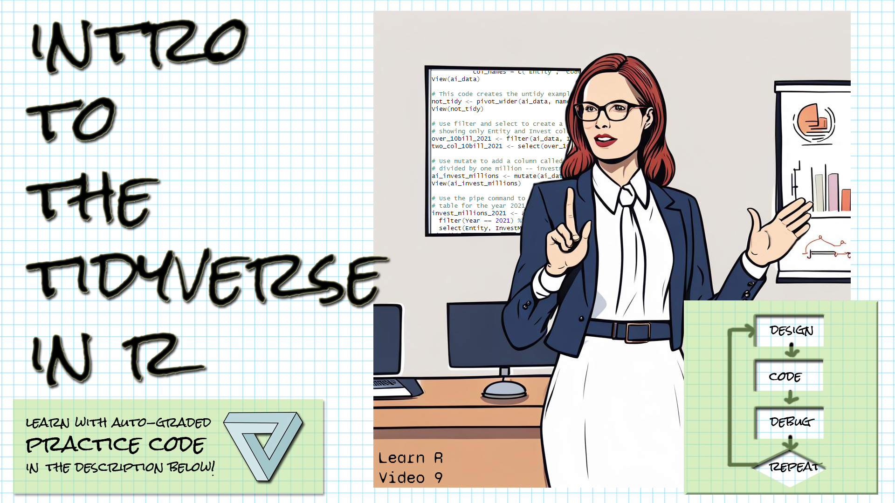

Welcome!

These exercises align with the Design Code Debug Repeat Introductory R video 9 Introduction to the tidyverse.
If you haven’t already watched the video, you might want to watch it first before trying these exercises.
Make sure you have the learnr, gradethis, and the tidyverse packages installed.
Here is the source for the data we’re working with: Our World in Data’s artificial intelligence data Daniel Zhang, Nestor Maslej, Erik Brynjolfsson, John Etchemendy, Terah Lyons, James Manyika, Helen Ngo, Juan Carlos Niebles, Michael Sellitto, Ellie Sakhaee, Yoav Shoham, Jack Clark, and Raymond Perrault, “The AI Index 2022 Annual Report,” AI Index Steering Committee, Stanford Institute for Human-Centered AI, Stanford University, March 2022.
Tidy format
Let’s review tidy format, first. Here are two tables. The following questions refer to these two tables.
temperatures1
temperatures2
Filtering rows
The dplyr filter function will allow you to extract rows from your table based on some criterion (expressed with a logical condition).
The ai_data table has been read in with columns Entity, Code, Year, and Invest.
Use the filter function to extract all of the rows of the ai_data table that have an Invest value of over one billion. (Do not store the result in a new dataframe, or if you do, make the name of the dataframe the last line of your script.)
The filter function takes the table as the first parameter and the
logical condition you're filtering by as the second parameter.Remember you can refer to columns by their names.Your logical condition should be
Invest > 1000000000You could either pass ai_data in as the first argument to filter,
or you could pipe it in with ai_data |> filter()
If you pipe, then your condition is the first argument.ai_data |> filter(Invest > 1000000000)Selecting columns
The dplyr select function will allow you to extract columns from your table using their names, or extract all columns but a column by negating its name.
The ai_data table has been read in with columns Entity, Code, Year, and Invest.
Use the select function to select all columns except Code, which contains only NA values.
The select function takes the table as the first parameter and then all
other parameters are the columns you want to include.Remember you can refer to columns by their names.You want the Entity, Year, and Invest columns.
(Or, put another way, you don't want the Code column.)You could either pass ai_data in as the first argument to select,
or you could pipe it in with ai_data |> select()
If you pipe, then you don't include the dataframe as the first argument.ai_data |> select(-Code)Mutating a dataframe
The dplyr mutate function will allow you to add columns to a dataframe by specifying the operation to apply to each row to produce the value for the new column.
The ai_data table has been read in with columns Entity, Code, Year, and Invest.
Use the mutate function to add an Invest_millions column to the dataframe, computed by dividing the Invest columns by one million.
The mutate function takes the table as the first parameter and then the
second parameter is the name of the new column, =, and the operationThe operation is Invest / 1000000You could either pass ai_data in as the first argument to mutate,
or you could pipe it in with ai_data |> mutate()
If you pipe, then you don't include the dataframe as the first argument.ai_data |> mutate(Invest_Millions = Invest / 1000000)Using the pipe
The tidyverse functions filter, select, and mutate take a dataframe (or tibble) as the first argument. The pipe |> will supply the result of operation to the left as the first argument to the function on the right, meaning you do not need to store intermediate results.
The ai_data table has been read in with columns Entity, Code, Year, and Invest.
Put together everything we’ve done prior to this with the pipe. This exercise will be graded on your code, not on your solution, so you’ll need to write exactly what’s requested.
Pipe the ai_data table to a filter command, filtering only Invest values greater than one billion. You should then select from that the Entity, Year, and Invest columns. (Be sure to specify the three columns – don’t specify the column you want excluded.) Then mutate that table to include an Invest_Millions column, which is the Invest column divided by one million.
Refer to prior exercises and hints to know how to complete each part of this.Begin with ai_data and pipe it to filter, like this:
ai_data |> filter(Invest > 1000000000)Pipe the result of the last hint to select,
and then pipe the result of that to mutate.ai_data |> filter(Invest > 1000000000) |> select(Entity, Year, Invest) |> mutate(Invest_Millions = Invest / 1000000)